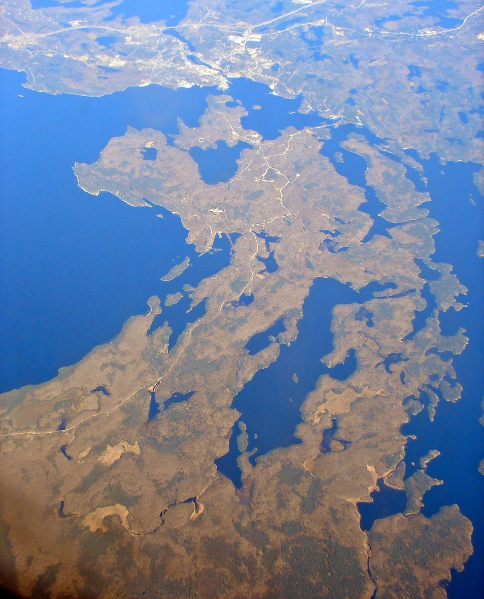

캐나다 하이드로원, 새 500kV 송전선 '원주민 공동체 최대 50% 공동 소유' 제시…와사우크싱 부족 설명회서 환경 보호·결정 참여 요구

서드버리~배리 약 300km 송전선, 2032년 가동 목표…공동 소유자는 규제기관이 정하는 수익률(지금까지 8~10%) 받는 구조, 하이드로원 "1970년대 기존 선로는 제대로 된 협의 없이 지었다" 인정
캐나다 온타리오주 전력회사 하이드로원(Hydro One)이 새로 짓는 서드버리~배리 500kV 송전선에 대해, 인근 원주민 공동체가 투자해 선로 지분을 최대 50%까지 공동 소유할 수 있다는 방안을 지역 설명회에서 내놓았다. 설명회는 10월 21일 저녁 조지아만 패리섬의 와사우크싱 부족(Wasauksing First Nation)과 하이드로원이 함께 연 자유 방문 행사로, 주민들은 노선 지도를 살피며 질문하고 저녁을 함께 했다. 이 송전선은 서드버리 북쪽 한머 변전소에서 배리 근처 에사 변전소까지 약 300km를 잇는 사업으로, 온타리오주 에너지·광업부가 올해 2월 하이드로원을 사업자로 지정했고 2032년 가동을 목표로 한다. 하이드로원 설명에 따르면 공동 소유자가 된 공동체는 온타리오 에너지위원회(OEB)가 정하는 규제 수익률을 받으며, 이 수익률은 지금까지 8~10% 수준이었고 회사는 공동체의 투자 자금 마련도 도울 수 있다고 밝혔다. 다만 와사우크싱을 비롯한 공동체가 실제로 지분 투자에 나설지는 아직 알려지지 않았다. 주민들은 선로 아래 제초제 살포 여부, 원주민 전통 지식을 환경 계획에 반영하는 방법, 주요 결정 자리에서 지역 목소리를 보장할 방법을 물었고, 하이드로원은 공사 전 식생 관리 계획을 부족과 함께 만들고 손으로 베는 방식을 우선하며 원주민 협력 공동체와 매달 환경 실무 모임을 열고 있다고 답했다. 하이드로원 원주민 협력 담당 에이미 셸턴(Amy Shelton)은 1970년대 기존 송전선을 제대로 된 협의 없이 지었다고 인정하며 "과거의 잘못에서 배우겠다"고 말했고, 와사우크싱은 20개 원주민 공동체가 함께하는 '에너지 회랑 원주민 연합(Energy Corridor First Nations)'의 일원이라고 설명했다.
시민에너지 관점
송전선이 지나가는 땅의 공동체에 일회성 보상금이 아니라 선로 지분 최대 50%와 규제기관이 정하는 수익률을 내놓는 것은, 송전망을 '참고 견디는 시설'에서 '함께 소유하는 자산'으로 바꾸는 설계다. 돈 없는 공동체에게 지분 참여는 그림의 떡이라는 우려가 나올 수 있지만, 사업자가 투자 자금 마련까지 돕겠다고 한 대목이 그 물음에 대한 하나의 답이다. 1970년대 협의 없이 놓인 선로가 남긴 불신을 푸는 길도 설명회 몇 번이 아니라 소유와 결정권을 실제로 나누는 데 있다. 국내 송전선·변전소 갈등도 보상금 협상에만 맡길 것이 아니라, 경과지 주민과 마을이 지분을 갖고 수익을 받는 공동 소유 방식을 송전망 계획 단계부터 제도에 넣어야 한다.
출처: Parry Sound North Star 2026-10-29 Shania Tabobondung 원문 보기
カナダのハイドロワン、新設500kV送電線で「先住民コミュニティが最大50%共同所有」を提示…ワサウクシングの説明会で環境保護と意思決定への参加を要求
サドベリー～バリー間約300km、2032年の運用開始を目指す…共同所有者は規制当局が定める収益率（これまで8～10%）を受け取る仕組み、ハイドロワンは「1970年代の既存線は十分な協議なしに建設した」と認める
カナダ・オンタリオ州の電力会社ハイドロワン（Hydro One）は、新たに建設するサドベリー～バリー間の500kV送電線について、近隣の先住民コミュニティが出資して送電線の持ち分を最大50%まで共同所有できる案を地元の説明会で示した。説明会は10月21日夕方、ジョージアン湾パリー島のワサウクシング・ファースト・ネーション（Wasauksing First Nation）とハイドロワンが共催した自由参加型の催しで、住民はルート案の地図を見ながら質問し、夕食を共にした。この送電線はサドベリー北方のハンマー変電所からバリー近郊のエッサ変電所まで約300kmを結ぶ事業で、オンタリオ州エネルギー・鉱山省が今年2月にハイドロワンを事業者に指定し、2032年の運用開始を目指している。ハイドロワンの説明によると、共同所有者となったコミュニティはオンタリオ・エネルギー委員会（OEB）が定める規制収益率を受け取り、その水準はこれまで8～10%で、同社はコミュニティの投資資金の確保も支援できるという。ただ、ワサウクシングをはじめとするコミュニティが実際に出資するかどうかはまだ明らかになっていない。住民は送電線下での除草剤散布の有無、先住民の伝統的知識を環境計画に反映する方法、重要な意思決定の場で地域の声をどう保証するかを尋ね、ハイドロワンは着工前に植生管理計画をワサウクシングと共に作り、手作業での刈り取りを優先し、先住民パートナーと毎月の環境作業部会を開いていると答えた。ハイドロワンの先住民パートナーシップ担当エイミー・シェルトン（Amy Shelton）氏は、1970年代の既存送電線が十分な協議なしに建設されたことを認め、「過去の過ちから学ぶ」と述べ、ワサウクシングは20の先住民コミュニティが参加する「エネルギー回廊ファースト・ネーション連合（Energy Corridor First Nations）」の一員だと説明した。
市民エネルギーの視点
送電線が通る土地のコミュニティに一時的な補償金ではなく、送電線の持ち分最大50%と規制当局が定める収益率を示すことは、送電網を「我慢して受け入れる施設」から「共に所有する資産」へと変える設計だ。資金のないコミュニティにとって出資は絵に描いた餅だとの懸念もありうるが、事業者が投資資金の確保まで支援すると述べた点がその問いへの一つの答えになる。1970年代に協議なしで敷かれた送電線が残した不信を解く道も、説明会を何度か開くことではなく、所有と決定権を実際に分かち合うことにある。韓国の送電線・変電所をめぐる対立も補償金交渉だけに委ねるのではなく、経過地の住民と集落が持ち分を持ち収益を受け取る共同所有の仕組みを、送電網の計画段階から制度に組み込むべきだ。
出典: Parry Sound North Star 2026-10-29 シャニア・タボボンドゥン（Shania Tabobondung） 原文を読む
加拿大Hydro One就新建500千伏输电线提出"原住民社区最多共同拥有50%"…瓦索克辛原住民说明会上居民要求环境保护和参与决策
萨德伯里至巴里约300公里，目标2032年投运…共同所有者获得监管机构核定的回报率（以往为8%至10%），Hydro One承认"1970年代的既有线路未经充分协商就已建成"
加拿大安大略省电力公司Hydro One在一场地方说明会上表示，对于新建的萨德伯里至巴里500千伏输电线，附近原住民社区可以出资，最多共同拥有线路50%的股份。说明会于10月21日傍晚举行，由乔治亚湾帕里岛的瓦索克辛原住民（Wasauksing First Nation）与Hydro One联合主办，采取自由参加形式，居民一边查看路线地图一边提问，并共进晚餐。这条输电线从萨德伯里以北的汉默变电站延伸至巴里附近的埃萨变电站，全长约300公里；安大略省能源和矿业部今年2月指定Hydro One为开发建设方，目标是2032年投入运行。据Hydro One介绍，成为共同所有者的社区将获得安大略能源委员会（OEB）核定的监管回报率，这一回报率以往在8%至10%之间，公司还可以协助社区筹措投资资金。不过，瓦索克辛等社区是否真的会出资入股，目前尚不清楚。居民询问了线路下方是否喷洒除草剂、如何把原住民传统知识纳入环境规划，以及如何在重要决策中保障地方声音；Hydro One回答说，施工前将与瓦索克辛共同制定植被管理计划，优先采用人工割除方式，并每月与原住民合作社区召开环境工作组会议。Hydro One原住民合作协调员埃米·谢尔顿（Amy Shelton）承认1970年代的既有输电线未经充分协商就已建成，表示"要从过去的错误中学习"，并介绍瓦索克辛是由20个原住民社区组成的"能源走廊原住民联盟（Energy Corridor First Nations）"成员之一。
市民能源视角
向输电线经过之地的社区提供的不是一次性补偿金，而是最多50%的线路股份和由监管机构核定的回报率，这是把输电网从"不得不忍受的设施"变为"共同拥有的资产"的设计。有人会担心，对没有资金的社区来说入股只是画饼，但运营方表示愿意协助筹措投资资金，正是对这一疑问的一种回答。要化解1970年代未经协商铺设线路所留下的不信任，靠的也不是多开几场说明会，而是真正分享所有权和决策权。韩国的输电线和变电站冲突也不应只交给补偿金谈判，而应从输电网规划阶段起，就把沿线居民和村庄持股、分享收益的共同所有方式写进制度。
来源: Parry Sound North Star 2026-10-29 莎尼娅·塔博邦东（Shania Tabobondung） 查看原文
Hydro One offers First Nations up to 50% co-ownership of new 500kV Ontario transmission line; Wasauksing open house presses for environmental safeguards and a say in decisions
The roughly 300km Sudbury-Barrie line is due in service by 2032; co-owners would earn a regulated return (historically 8-10%), and Hydro One admits the existing line was built in the 1970s without proper consultation
Ontario utility Hydro One has told a local open house that nearby First Nations can invest in its new 500kV Sudbury-Barrie transmission line and become co-owners of up to 50% of it. The drop-in session, co-hosted by Wasauksing First Nation on Parry Island in Georgian Bay and Hydro One on the evening of October 21, let residents look over proposed route maps, ask questions and share a meal. The line will run about 300km from the Hanmer transformer station north of Sudbury to the Essa transformer station near Barrie; Ontario's Ministry of Energy and Mines designated Hydro One to build it this February, and it is expected in service by 2032. According to Hydro One, communities that become co-owners would receive a regulated rate of return set by the Ontario Energy Board, which has historically been 8-10%, and the company said it can help them secure the money to invest. Whether Wasauksing or other communities will actually take up a stake has not been reported. Residents asked about herbicide spraying under the line, how Indigenous knowledge will shape environmental planning and how local voices will be guaranteed at key decision-making tables; Hydro One replied that it will co-develop a vegetation management plan with Wasauksing before construction, favours hand-cutting, and holds a monthly environmental working group with First Nation partners. Amy Shelton, Hydro One's co-ordinator of Indigenous partnerships, acknowledged that the existing line was built in the 1970s without proper consultation and said the company is committed to "learning from past mistakes," adding that Wasauksing is one of 20 First Nations in the Energy Corridor First Nations coalition.
Citizen Energy View
Offering the communities a line crosses not a one-off compensation payment but up to 50% of the asset and a return set by the regulator is a design that turns the grid from something people must put up with into something they own together. Some will worry that equity is out of reach for communities without capital, but the utility's pledge to help raise the investment money is one answer to that question. Repairing the distrust left by a line laid without consultation in the 1970s will take not a few more open houses but a real sharing of ownership and decision-making. Korea, too, should stop leaving transmission line and substation disputes to compensation talks alone and build co-ownership, in which residents and villages along the route hold stakes and earn returns, into the rules from the grid planning stage.
Source: Parry Sound North Star 2026-10-29 Shania Tabobondung Read the original